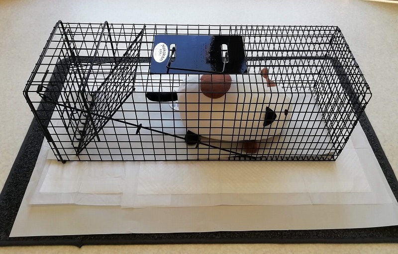
今回は捕獲器の設置方法についてご紹介します。
様々な捕獲器がありますが、今回下の写真の捕獲器を例に紹介します。
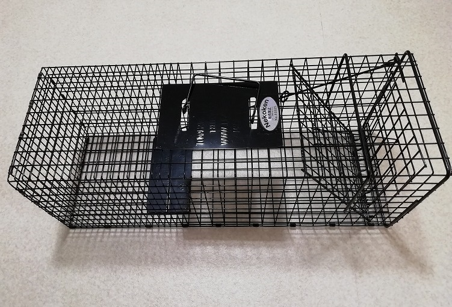
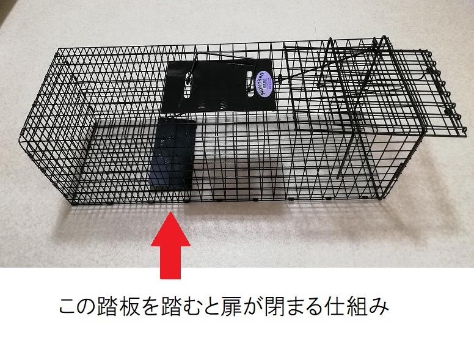
まず、捕獲器の中に敷く新聞紙を用意します
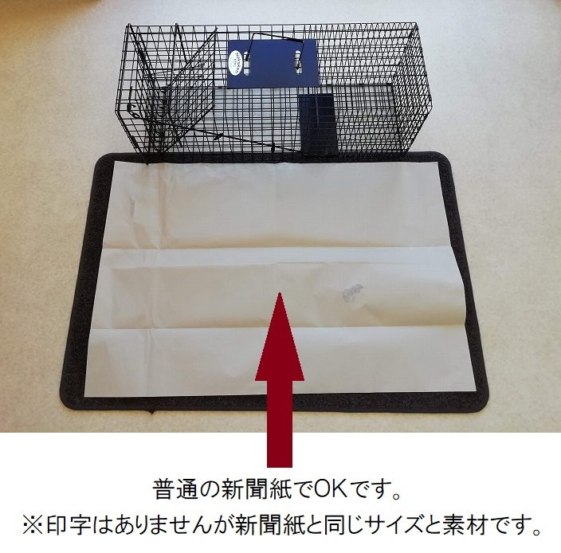
新聞紙を捕獲器の幅に合わせて細長く折りたたみます。
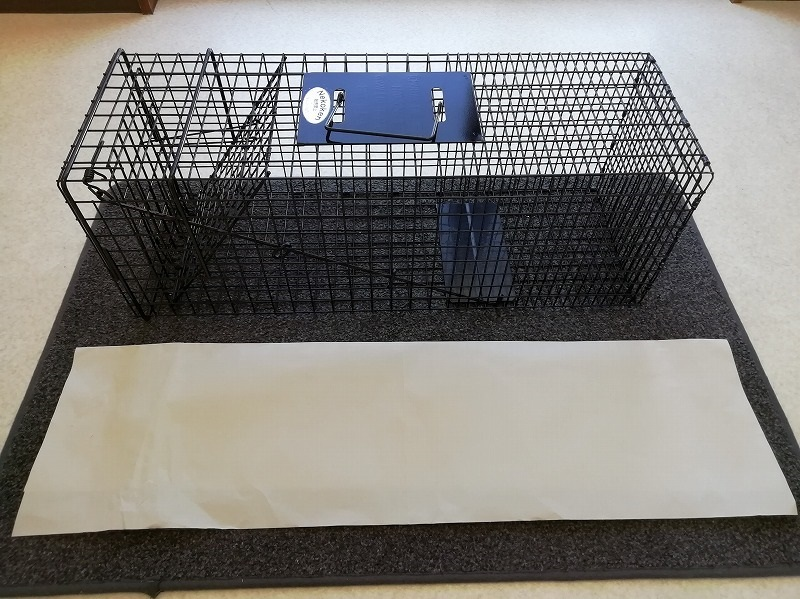
畳んだ新聞紙を捕獲器の中に敷きます。
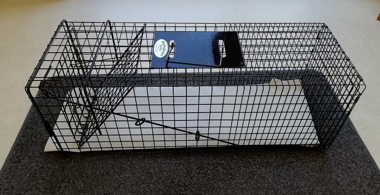
敷いた新聞紙が風で飛ばされそうなら、写真の様に捕獲器の底にガムテープで貼り付けるのも有りです。
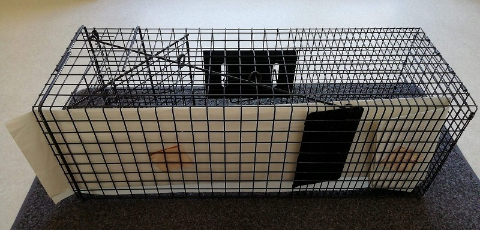
捕獲器の中にペットシーツを敷いてこられる方がいますが、猫がメチャクチャに裂いて、シーツの中身の吸水ポリマーで埃だらけになるので、止めて頂きたいです・・・
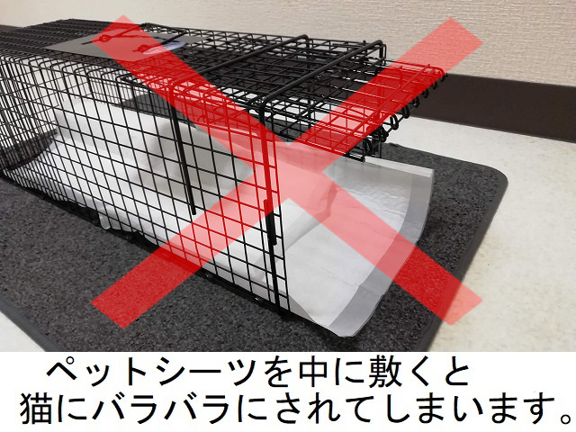
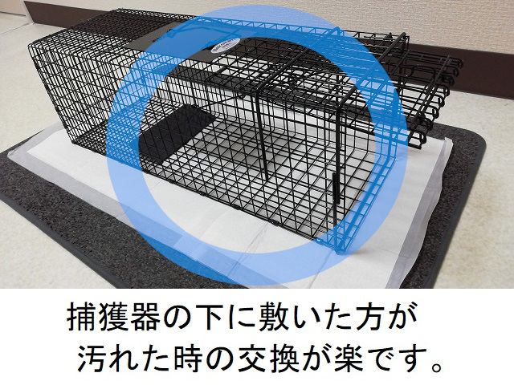
敷くのであれば、捕獲器の中ではなく、「下」にお願い致します。
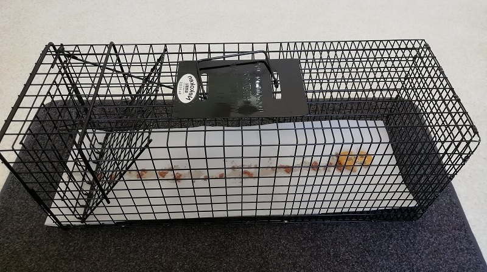
一番奥に唐揚げや焼き魚など、匂いの強い物を置き、そこまでの道筋として、チュールやウェットフード、ドライフード等を点々と誘導する様に撒いておきます。
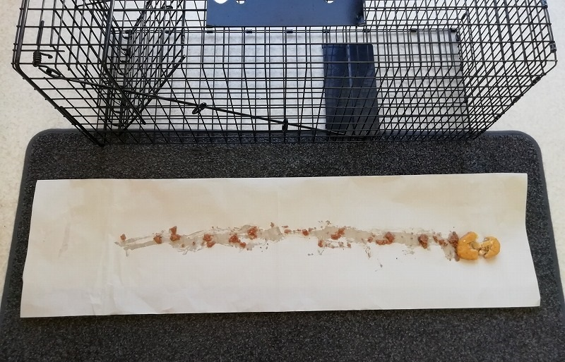
撒きエサは、奥に辿り着くまでにお腹いっぱいにならない程度の量にしておきます。
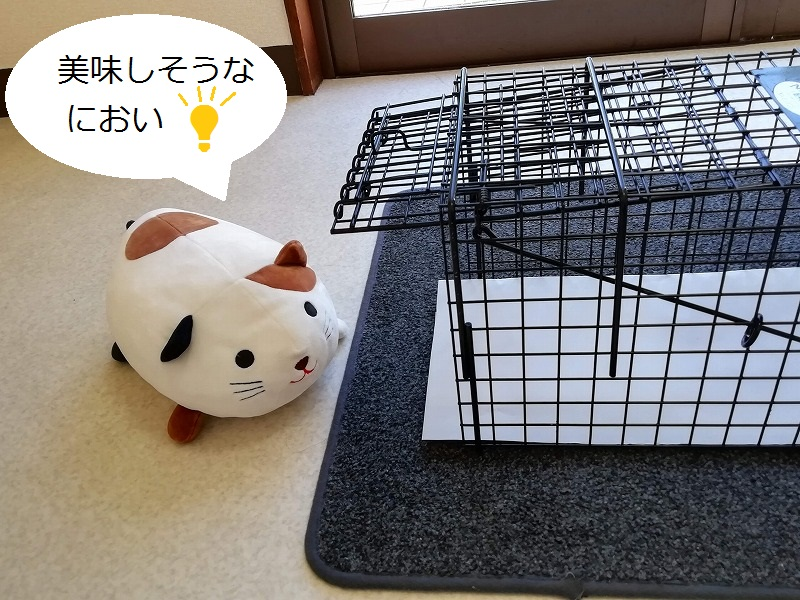
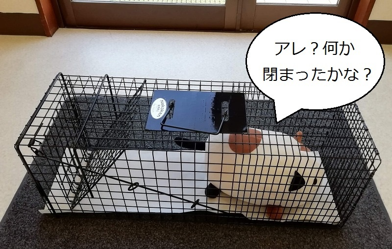
※ イメージ図です。ぬいぐるみが汚れるのでエサは入れていません。
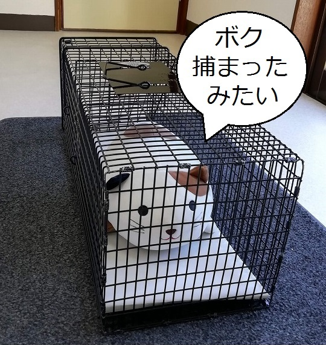
実際はこんなにのんびりしていません。
パニックになって大暴れします。
落ち着いて布やシーツ類を被せてあげましょう。
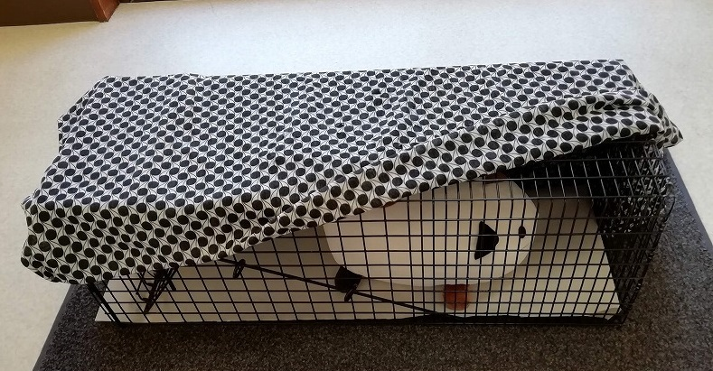
視界を遮ってあげると猫も少し落ち着きます。
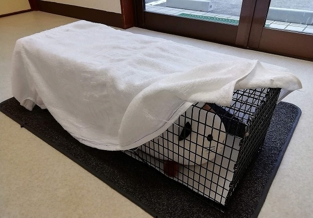
※ 被せ物としてバスタオルは冬には防寒になりますが、夏は暑くなり過ぎる可能性があります。
熱中症の心配がありますので、十分に注意してあげて下さい。
話は逸れますが、ちょっとした工夫を紹介します。
ダンボールを写真の様に加工して・・・
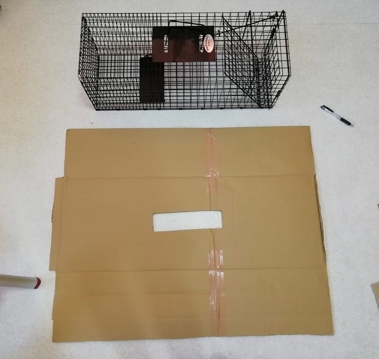
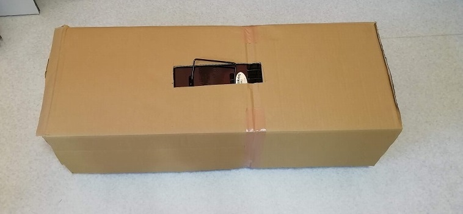
上の様に捕獲器に被せると、そのまま設置する事も可能です。捕獲後に布を被せる手間も要りません。
※ 糞尿やエサで汚れたら使い捨てましょう。
特に！伝染病の蔓延地帯で使用した物は必ず廃棄し、捕獲器も十分消毒してください！
捕獲器の種類が変わっても、大体の手順は同じです。